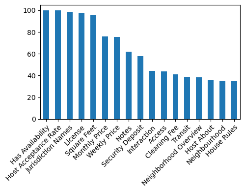
Exercise ML
Objective
This exercise aims to develop a machine learning model to predict prices for new accommodations based on the available data.
Exploratory data analysis
Data contained 14,780 samples with 89 features. Price feature was considered as target.
In line with the goal of this analysis described above in objetive section, only features related to the accommodation’s characteristics (amenities, location, etc.) were retained, while all data related to reviews, availability, or pricing were not be considered.
This applies, for example, when a client has a property with specific features and location, and wants to know at what price to offer accommodation.
The dataset contained no duplicates entries, confirmed by checking the unique identifiers features: ID, Scrape ID and Name. An analysis of missing data revealed that 59 features contain NA values. Figure 1 shows the features with the highest percentages of missing values.
Target feature.
The distribution of the Price feature showed a right-skewed to the right with a peak around 50 (Figure 2). Values ranged from 9.0 to 999.0. The target feature contained 17 NA values. This accommodations were removed before training the model and were used later for testing.
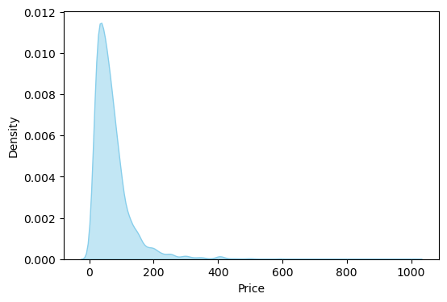
Features for prediction.
A selection of features was performed. First, all features with data available for more than 70% of samples were kept (for example, the Square Feet feature). Next, features unrelated to accomodation characteristics were also removed, such as those containing strings like url, host or name. After this filtering process, only 25 features remained.
In the second stage, the remaining features were examined in greater detail to identify redundancies. For example, multiple location-related features were available (Host Location, City, State,Market, Smart Location, Country Code, Country). These variables contained highly redundant information, so only the most informative ones were retained (Smart Location and Country Code).
A similar situation occured with neighborhood-related features. In this case, only ‘Neighbourhood Group Cleaned’ was retained because it contained no missing values and served as a simplified version of ‘Neighbourhood Cleaned’ with fewer categorical levels.
Experiences Offered feature was discarded because information was only available for 11 samples.
After this filtering process, 16 features were retained. A comprehensive analysis of these remaining features is presented below. Visual inspection was conducted by grouping features into types: discrete quantitative, qualitative and continuous quantitative. Amenities, Smart Location and Neighbourhood features were analysed separately.
Discrete quantitative
These features showed different distributions with most of the accomodations having one bathroom, one bedroom, one bed and accomodating one guest (see Figure 3). One accomodation showed a zero value for the Guest included feature and 66 accomodations showed zero value for the Bathrooms feature.
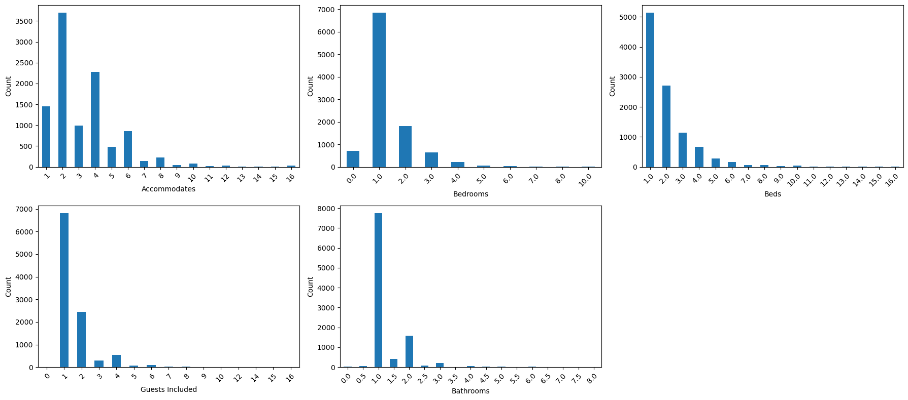
Qualitative
Features exhibited unbalanced distributions across their levels. Most features showed distributions where the majority of samples were concentrated in one or few categories. For example, ‘Apartment’ was the most frequent level for Property Type feature, and most accomodations were labeled ‘ES’ for the Country Code feature (see Figure 4)
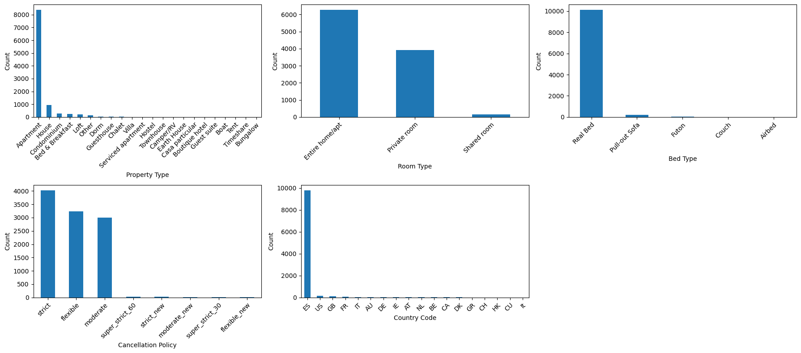
Continuous quantitative
These features exhibited sharp peaks centered at 40 and 0 for Latitude and Longitude respectively (see Figure 5). The Latitude feature ranged from -40 to 60, while Longitude from -150 to 150.
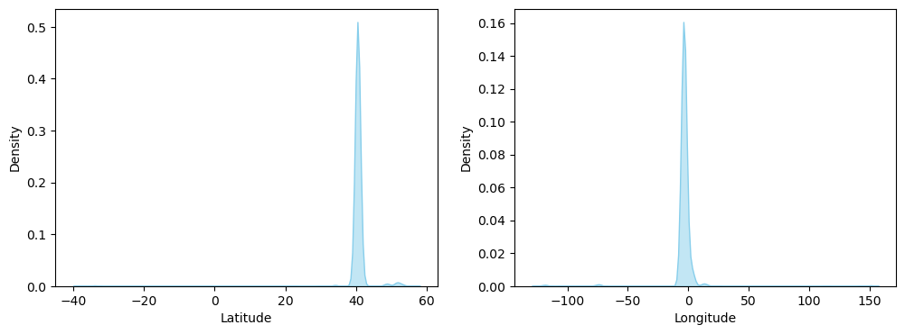
Amenities feature
A total of 83 different amenities were found, with only 19 of them included in more than 20% of the accommodations (Figure 6)
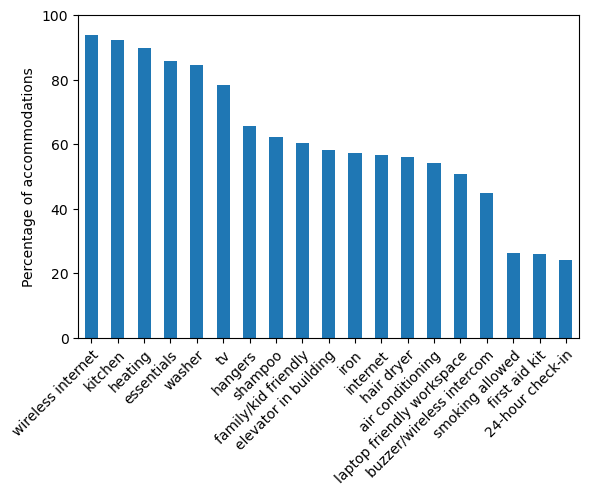
Smart Location
There were 254 different locations, with most accommodations concentrated in Madrid (over 85%). Barcelona was the second most frequent location, while all others individually accounted for less than 1% each (Figure 7).
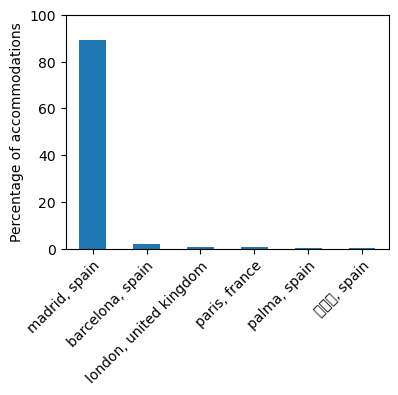
Neighbourhood
There were 49 different neighbourhoods, with most accommodations concentrated in Centro (over 45%). All others individually accounted for less than 7% each (Figure 8).
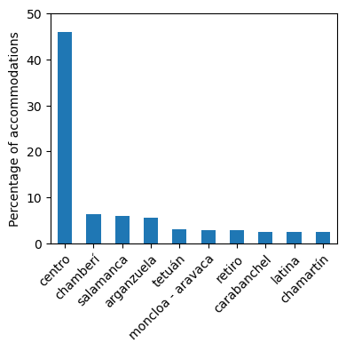
Feature selection
At this stage, useful features had been selected by discarding those without valuable information. These retained features were used to identify the optimal subset of features with maximum predictive power through a three-steps process:
Impute missing values and encode the features to ensure proper processing and compatibility with analytical algorithm.
Calculate the individual predictive power of each feature. Features with low predictive power may be discarded.
Search for the optimal feature subset to be used in model training.
The imputation strategy was designed based on the distribution of missing values (see Figure 9). Missing values were replaced by the mode (most frequent value).
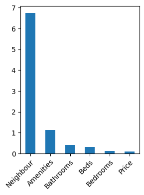
The list of amenities were transformed into binary columns. Predictive power analysis was then performed on these amenities to select the most informative (see Figure 10). The twelve most informative amenities were selected.
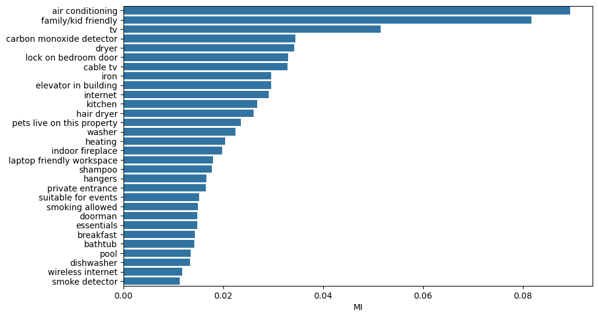
Predictive power of each feature
Several parameters were monitorized to evaluate the predictive power of each feature:
Mutual information between each feature and the target (Figure 11)
Performance of the 1D model for each feature (Figure 12)
Relationships between the predictive features using Pearson’s correlation, Cramer’s V test and mutual information (Figure 13, Figure 14 and Figure 15)
Based on this information, some features were removed:
Although they showed good predictive power, the features
Beds,BedroomsandRoom Typewere removed because they have a strong relationship withAccommodates(Figure 15)The features
Longitude,Smart Location_madrid, spainandNeighbour_centrohad a strong relationship according to Figure 15. Aditionally,Smart Location_madrid, spainandCountry Code_ESpresented moderate correlation (Figure 14). SinceLongitudeandLatitudeshowed high mutual information with the target, these two features were kept and the others removed.The one-hot enconded features derived
Property Typewere removed due to their strong relationship with the target-encoded version ofProperty Type(Figure 15). The target-encoded feature was kept because it showed a high relationship with target.The same approach was applied to the
Bed Typefeatures. Although both the encoded features showed moderate relationships, the one-hot encoded version presented a higher mutual information with target, so it was kept (Figure 11).The one-hot encoded
Cancellation Policyfeatures have very low predicitive power so were removed (Figure 11 and Figure 12).
Finally, twenty features were kept to perform the step of searching for the optimal subset of features.
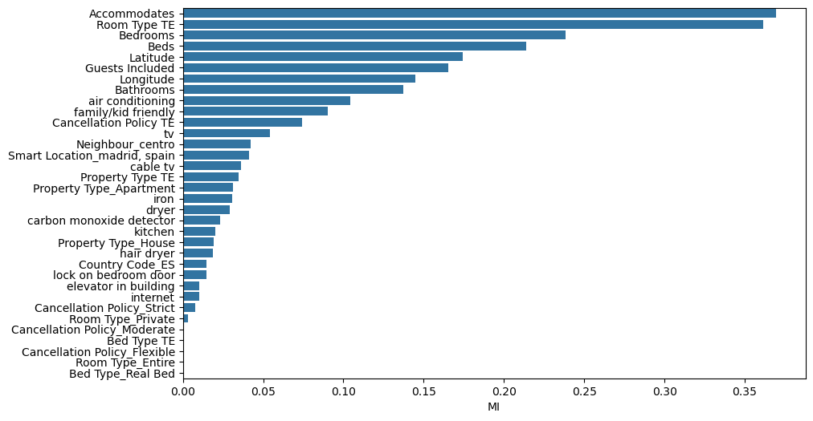
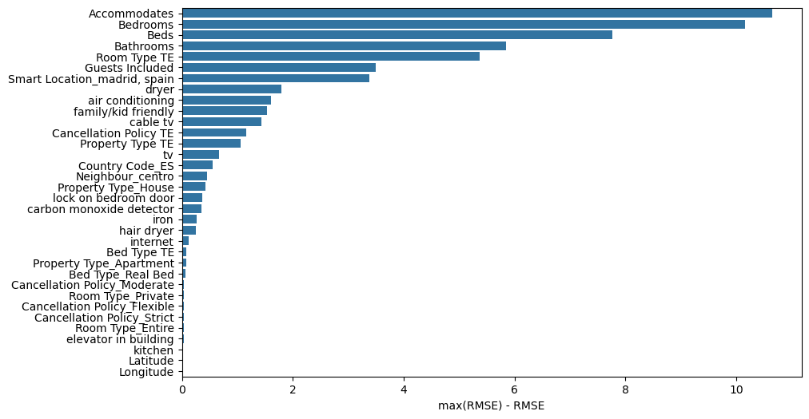
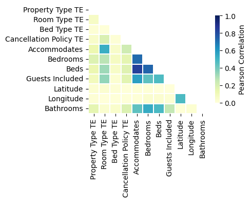
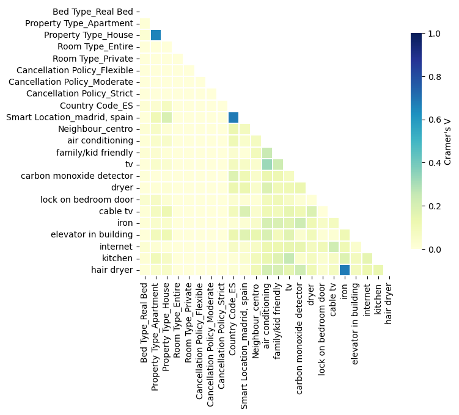
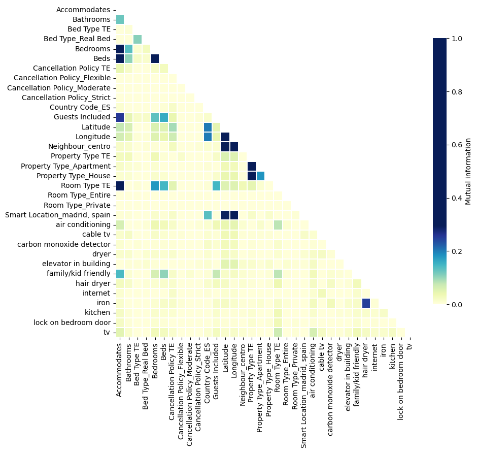
Optimal subset of features.
From this set of twenty features, an optimal subset was searched using a genetic algorithm combined with a lineal regression model to evaluate the candidate subsets. After running the genetic algorithm, a subset of fifteen features was selected.
Model performance
Three algorithms were tested to find the model with the highest predictive power: Random Forest, Gradient Boosting and Support Vector Machine. Hyperparameter tuning was performed using Optuna framework exploring each model’s parameter space to identify optimal configurations that maximize predictive performance using TPE algorithm. Several scores were calculated but median absolute error was used to drive hyperparameter optimization. In the exploratory data analysis, some extreme price values were found (see Figure 2), so this metric was chosen because it is more robust to outliers.
Considering this metric, the model with the best performance was the Support Vector Machine with an RBF kernel. Additionally, this model showed the least overfitting.
| Model | Train score | Valid score | RMSE | R2 |
|---|---|---|---|---|
| Random Forest | 10.631 | 15.292 | 54.312 | 0.444 |
| XGBoost | 12.3 | 15.343 | 55.977 | 0.409 |
| SVR kernel RBF | 13.394 | 13.806 | 61.057 | 0.3 |
Final model
Based on the results above, a Support Vector Machine model was trained using 80% of the dataset, with validation performed on the remaining 20%. This model achieved a median absolute error of 13.78, consistent with the values obtained during the training process.
Prediction
The available data contained 17 samples missing price data. These samples were filtered and used to test the trained model (see data_to_predict.csv and data_with_prediction.csv files)